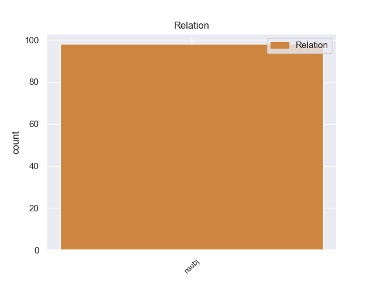
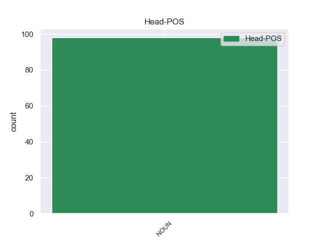
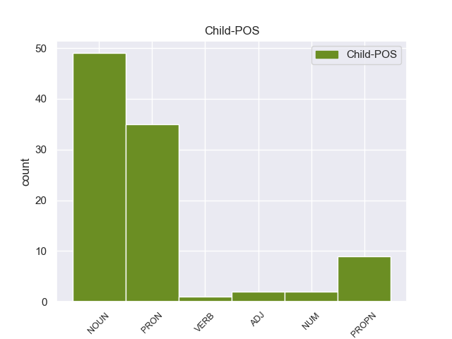

Distribution of features within this leaf



Agreement Rules sorted by frequency.
- When the dependent token is the nominal subject(nsubj) of the head token, and the head token is NOUN
1 Ο _ _ _ _ 0 _ _ _
2 λόγος _ _ _ _ 0 _ _ _
3 γίνεται _ _ _ _ 0 _ _ _
4 για _ _ _ _ 0 _ _ _
5 τον _ _ _ _ 0 _ _ _
6 Χάουμε _ _ _ _ 0 _ _ _
7 Μάτας _ _ _ _ 0 _ _ _
8 , _ _ _ _ 0 _ _ _
9 ο _ _ _ _ 0 _ _ _
10 οποίος οποίος PRON PRON Case=Nom|Gender=Masc|Number=Sing|Person=3|PronType=Rel 12 nsubj _ _
11 ήταν _ _ _ _ 0 _ _ _
12 Υπουργός υπουργός NOUN NOUN Case=Nom|Gender=Masc|Number=Sing 0 _ _ _
13 Περιβάλλοντος _ _ _ _ 0 _ _ _
14 τα _ _ _ _ 0 _ _ _
15 έτη _ _ _ _ 0 _ _ _
16 2000-2003 _ _ _ _ 0 _ _ _
17 και _ _ _ _ 0 _ _ _
18 Περιφερειακός _ _ _ _ 0 _ _ _
19 Πρωθυπουργός _ _ _ _ 0 _ _ _
20 των _ _ _ _ 0 _ _ _
21 Βαλεαρίδων _ _ _ _ 0 _ _ _
22 Νήσων _ _ _ _ 0 _ _ _
23 κατά _ _ _ _ 0 _ _ _
24 την _ _ _ _ 0 _ _ _
25 περίοδο _ _ _ _ 0 _ _ _
26 2003-2007 _ _ _ _ 0 _ _ _
27 . _ _ _ _ 0 _ _ _
Disagree Examples:
1 Κατά _ _ _ _ 0 _ _ _
2 την _ _ _ _ 0 _ _ _
3 άποψή _ _ _ _ 0 _ _ _
4 μας _ _ _ _ 0 _ _ _
5 , _ _ _ _ 0 _ _ _
6 ο _ _ _ _ 0 _ _ _
7 σκοπός σκοπός NOUN NOUN Case=Nom|Gender=Masc|Number=Sing 0 _ _ _
8 δεν _ _ _ _ 0 _ _ _
9 είναι _ _ _ _ 0 _ _ _
10 να _ _ _ _ 0 _ _ _
11 υπάρχουν υπάρχω VERB VERB Aspect=Imp|Mood=Ind|Number=Plur|Person=3|Tense=Pres|VerbForm=Fin|Voice=Act 7 nsubj _ _
12 διαρκώς _ _ _ _ 0 _ _ _
13 όλο _ _ _ _ 0 _ _ _
14 και _ _ _ _ 0 _ _ _
15 περισσότερες _ _ _ _ 0 _ _ _
16 οδηγίες _ _ _ _ 0 _ _ _
17 , _ _ _ _ 0 _ _ _
18 όλο _ _ _ _ 0 _ _ _
19 και _ _ _ _ 0 _ _ _
20 περισσότερες _ _ _ _ 0 _ _ _
21 λεπτομέρειες _ _ _ _ 0 _ _ _
22 , _ _ _ _ 0 _ _ _
23 αλλά _ _ _ _ 0 _ _ _
24 σκοπός _ _ _ _ 0 _ _ _
25 μας _ _ _ _ 0 _ _ _
26 είναι _ _ _ _ 0 _ _ _
27 οι _ _ _ _ 0 _ _ _
28 χώρες _ _ _ _ 0 _ _ _
29 να _ _ _ _ 0 _ _ _
30 είναι _ _ _ _ 0 _ _ _
31 πρόθυμες _ _ _ _ 0 _ _ _
32 να _ _ _ _ 0 _ _ _
33 δραστηριοποιηθούν _ _ _ _ 0 _ _ _
34 από _ _ _ _ 0 _ _ _
35 κοινού _ _ _ _ 0 _ _ _
36 , _ _ _ _ 0 _ _ _
37 ούτως _ _ _ _ 0 _ _ _
38 ώστε _ _ _ _ 0 _ _ _
39 και _ _ _ _ 0 _ _ _
40 οι _ _ _ _ 0 _ _ _
41 εργοδότες _ _ _ _ 0 _ _ _
42 να _ _ _ _ 0 _ _ _
43 είναι _ _ _ _ 0 _ _ _
44 σε _ _ _ _ 0 _ _ _
45 θέση _ _ _ _ 0 _ _ _
46 να _ _ _ _ 0 _ _ _
47 προσφέρουν _ _ _ _ 0 _ _ _
48 σωστές _ _ _ _ 0 _ _ _
49 τιμές _ _ _ _ 0 _ _ _
50 και _ _ _ _ 0 _ _ _
51 να _ _ _ _ 0 _ _ _
52 μην _ _ _ _ 0 _ _ _
53 υποφέρουν _ _ _ _ 0 _ _ _
54 από _ _ _ _ 0 _ _ _
55 τις _ _ _ _ 0 _ _ _
56 συνέπειες _ _ _ _ 0 _ _ _
57 του _ _ _ _ 0 _ _ _
58 ντάμπιγκ _ _ _ _ 0 _ _ _
59 , _ _ _ _ 0 _ _ _
60 που _ _ _ _ 0 _ _ _
61 αναπτύσσεται _ _ _ _ 0 _ _ _
62 σ _ _ _ _ 0 _ _ _
63 τον _ _ _ _ 0 _ _ _
64 τομέα _ _ _ _ 0 _ _ _
65 αυτό _ _ _ _ 0 _ _ _
66 , _ _ _ _ 0 _ _ _
67 και _ _ _ _ 0 _ _ _
68 φυσικά _ _ _ _ 0 _ _ _
69 και _ _ _ _ 0 _ _ _
70 οι _ _ _ _ 0 _ _ _
71 εργαζόμενοι _ _ _ _ 0 _ _ _
72 να _ _ _ _ 0 _ _ _
73 μπορούν _ _ _ _ 0 _ _ _
74 να _ _ _ _ 0 _ _ _
75 εργασθούν _ _ _ _ 0 _ _ _
76 σε _ _ _ _ 0 _ _ _
77 σωστές _ _ _ _ 0 _ _ _
78 συνθήκες _ _ _ _ 0 _ _ _
79 . _ _ _ _ 0 _ _ _
1 Κατά _ _ _ _ 0 _ _ _
2 την _ _ _ _ 0 _ _ _
3 άποψή _ _ _ _ 0 _ _ _
4 μας _ _ _ _ 0 _ _ _
5 , _ _ _ _ 0 _ _ _
6 ο _ _ _ _ 0 _ _ _
7 σκοπός _ _ _ _ 0 _ _ _
8 δεν _ _ _ _ 0 _ _ _
9 είναι _ _ _ _ 0 _ _ _
10 να _ _ _ _ 0 _ _ _
11 υπάρχουν _ _ _ _ 0 _ _ _
12 διαρκώς _ _ _ _ 0 _ _ _
13 όλο _ _ _ _ 0 _ _ _
14 και _ _ _ _ 0 _ _ _
15 περισσότερες _ _ _ _ 0 _ _ _
16 οδηγίες _ _ _ _ 0 _ _ _
17 , _ _ _ _ 0 _ _ _
18 όλο _ _ _ _ 0 _ _ _
19 και _ _ _ _ 0 _ _ _
20 περισσότερες _ _ _ _ 0 _ _ _
21 λεπτομέρειες _ _ _ _ 0 _ _ _
22 , _ _ _ _ 0 _ _ _
23 αλλά _ _ _ _ 0 _ _ _
24 σκοπός _ _ _ _ 0 _ _ _
25 μας _ _ _ _ 0 _ _ _
26 είναι _ _ _ _ 0 _ _ _
27 οι _ _ _ _ 0 _ _ _
28 χώρες _ _ _ _ 0 _ _ _
29 να _ _ _ _ 0 _ _ _
30 είναι _ _ _ _ 0 _ _ _
31 πρόθυμες _ _ _ _ 0 _ _ _
32 να _ _ _ _ 0 _ _ _
33 δραστηριοποιηθούν _ _ _ _ 0 _ _ _
34 από _ _ _ _ 0 _ _ _
35 κοινού _ _ _ _ 0 _ _ _
36 , _ _ _ _ 0 _ _ _
37 ούτως _ _ _ _ 0 _ _ _
38 ώστε _ _ _ _ 0 _ _ _
39 και _ _ _ _ 0 _ _ _
40 οι _ _ _ _ 0 _ _ _
41 εργοδότες εργοδότης NOUN NOUN Case=Nom|Gender=Masc|Number=Plur 45 nsubj _ _
42 να _ _ _ _ 0 _ _ _
43 είναι _ _ _ _ 0 _ _ _
44 σε _ _ _ _ 0 _ _ _
45 θέση θέση NOUN NOUN Case=Acc|Gender=Fem|Number=Sing 0 _ _ _
46 να _ _ _ _ 0 _ _ _
47 προσφέρουν _ _ _ _ 0 _ _ _
48 σωστές _ _ _ _ 0 _ _ _
49 τιμές _ _ _ _ 0 _ _ _
50 και _ _ _ _ 0 _ _ _
51 να _ _ _ _ 0 _ _ _
52 μην _ _ _ _ 0 _ _ _
53 υποφέρουν _ _ _ _ 0 _ _ _
54 από _ _ _ _ 0 _ _ _
55 τις _ _ _ _ 0 _ _ _
56 συνέπειες _ _ _ _ 0 _ _ _
57 του _ _ _ _ 0 _ _ _
58 ντάμπιγκ _ _ _ _ 0 _ _ _
59 , _ _ _ _ 0 _ _ _
60 που _ _ _ _ 0 _ _ _
61 αναπτύσσεται _ _ _ _ 0 _ _ _
62 σ _ _ _ _ 0 _ _ _
63 τον _ _ _ _ 0 _ _ _
64 τομέα _ _ _ _ 0 _ _ _
65 αυτό _ _ _ _ 0 _ _ _
66 , _ _ _ _ 0 _ _ _
67 και _ _ _ _ 0 _ _ _
68 φυσικά _ _ _ _ 0 _ _ _
69 και _ _ _ _ 0 _ _ _
70 οι _ _ _ _ 0 _ _ _
71 εργαζόμενοι _ _ _ _ 0 _ _ _
72 να _ _ _ _ 0 _ _ _
73 μπορούν _ _ _ _ 0 _ _ _
74 να _ _ _ _ 0 _ _ _
75 εργασθούν _ _ _ _ 0 _ _ _
76 σε _ _ _ _ 0 _ _ _
77 σωστές _ _ _ _ 0 _ _ _
78 συνθήκες _ _ _ _ 0 _ _ _
79 . _ _ _ _ 0 _ _ _
1 Απλουστευτικές _ _ _ _ 0 _ _ _
2 ενιαίες _ _ _ _ 0 _ _ _
3 λύσεις λύση NOUN NOUN Case=Nom|Gender=Fem|Number=Plur 18 nsubj _ SpaceAfter=No
4 , _ _ _ _ 0 _ _ _
5 όπως _ _ _ _ 0 _ _ _
6 η _ _ _ _ 0 _ _ _
7 περικοπή _ _ _ _ 0 _ _ _
8 του _ _ _ _ 0 _ _ _
9 χρόνου _ _ _ _ 0 _ _ _
10 εργασίας _ _ _ _ 0 _ _ _
11 σε _ _ _ _ 0 _ _ _
12 ευρωπαϊκό _ _ _ _ 0 _ _ _
13 επίπεδο _ _ _ _ 0 _ _ _
14 , _ _ _ _ 0 _ _ _
15 είναι _ _ _ _ 0 _ _ _
16 άνευ _ _ _ _ 0 _ _ _
17 σημαντικής _ _ _ _ 0 _ _ _
18 ουσίας ουσία NOUN NOUN Case=Gen|Gender=Fem|Number=Sing 0 _ _ _
19 . _ _ _ _ 0 _ _ _
1 Οι _ _ _ _ 0 _ _ _
2 εργαζόμενοι _ _ _ _ 0 _ _ _
3 έχουν _ _ _ _ 0 _ _ _
4 ζωτικό _ _ _ _ 0 _ _ _
5 συμφέρον _ _ _ _ 0 _ _ _
6 όσον _ _ _ _ 0 _ _ _
7 αφορά _ _ _ _ 0 _ _ _
8 τη _ _ _ _ 0 _ _ _
9 μεσαία _ _ _ _ 0 _ _ _
10 τάξη _ _ _ _ 0 _ _ _
11 και _ _ _ _ 0 _ _ _
12 τις _ _ _ _ 0 _ _ _
13 βιοτεχνίες _ _ _ _ 0 _ _ _
14 , _ _ _ _ 0 _ _ _
15 που που PRON PRON Case=Nom|Gender=Fem|Number=Plur|Person=3|PronType=Rel 18 nsubj _ _
16 είναι _ _ _ _ 0 _ _ _
17 το _ _ _ _ 0 _ _ _
18 στήριγμα στήριγμα NOUN NOUN Case=Nom|Gender=Neut|Number=Sing 0 _ _ _
19 όλων _ _ _ _ 0 _ _ _
20 των _ _ _ _ 0 _ _ _
21 εθνικών _ _ _ _ 0 _ _ _
22 οικονομιών _ _ _ _ 0 _ _ _
23 της _ _ _ _ 0 _ _ _
24 ΕΕ _ _ _ _ 0 _ _ _
25 και _ _ _ _ 0 _ _ _
26 εξασφαλίζουν _ _ _ _ 0 _ _ _
27 το _ _ _ _ 0 _ _ _
28 70% _ _ _ _ 0 _ _ _
29 των _ _ _ _ 0 _ _ _
30 θέσεων _ _ _ _ 0 _ _ _
31 εργασίας _ _ _ _ 0 _ _ _
32 και _ _ _ _ 0 _ _ _
33 το _ _ _ _ 0 _ _ _
34 75% _ _ _ _ 0 _ _ _
35 των _ _ _ _ 0 _ _ _
36 θέσεων _ _ _ _ 0 _ _ _
37 εκπαίδευσης _ _ _ _ 0 _ _ _
38 . _ _ _ _ 0 _ _ _
1 Σύμφωνα _ _ _ _ 0 _ _ _
2 με _ _ _ _ 0 _ _ _
3 τα _ _ _ _ 0 _ _ _
4 τελευταία _ _ _ _ 0 _ _ _
5 στατιστικά _ _ _ _ 0 _ _ _
6 στοιχεία _ _ _ _ 0 _ _ _
7 από _ _ _ _ 0 _ _ _
8 την _ _ _ _ 0 _ _ _
9 Ευρωπαϊκή _ _ _ _ 0 _ _ _
10 Ένωση _ _ _ _ 0 _ _ _
11 , _ _ _ _ 0 _ _ _
12 " _ _ _ _ 0 _ _ _
13 περισσότερα _ _ _ _ 0 _ _ _
14 από _ _ _ _ 0 _ _ _
15 26 _ _ _ _ 0 _ _ _
16 εκατομμύρια _ _ _ _ 0 _ _ _
17 άτομα _ _ _ _ 0 _ _ _
18 είναι _ _ _ _ 0 _ _ _
19 άνεργοι _ _ _ _ 0 _ _ _
20 σ _ _ _ _ 0 _ _ _
21 τις _ _ _ _ 0 _ _ _
22 27 _ _ _ _ 0 _ _ _
23 χώρες _ _ _ _ 0 _ _ _
24 - _ _ _ _ 0 _ _ _
25 μέλη _ _ _ _ 0 _ _ _
26 της _ _ _ _ 0 _ _ _
27 Ευρωπαϊκής _ _ _ _ 0 _ _ _
28 Ένωσης _ _ _ _ 0 _ _ _
29 , _ _ _ _ 0 _ _ _
30 ενώ _ _ _ _ 0 _ _ _
31 πολλοί _ _ _ _ 0 _ _ _
32 περισσότεροι πολύς ADJ ADJ Case=Nom|Degree=Cmp|Gender=Masc|Number=Plur 36 nsubj _ _
33 είναι _ _ _ _ 0 _ _ _
34 εκτός _ _ _ _ 0 _ _ _
35 της _ _ _ _ 0 _ _ _
36 αγοράς αγορά NOUN NOUN Case=Gen|Gender=Fem|Number=Sing 0 _ _ _
37 εργασίας _ _ _ _ 0 _ _ _
38 σ _ _ _ _ 0 _ _ _
39 την _ _ _ _ 0 _ _ _
40 υπόλοιπη _ _ _ _ 0 _ _ _
41 Ευρώπη _ _ _ _ 0 _ _ _
42 και _ _ _ _ 0 _ _ _
43 την _ _ _ _ 0 _ _ _
44 κεντρική _ _ _ _ 0 _ _ _
45 Ασία _ _ _ _ 0 _ _ _
46 " _ _ _ _ 0 _ _ _
47 . _ _ _ _ 0 _ _ _